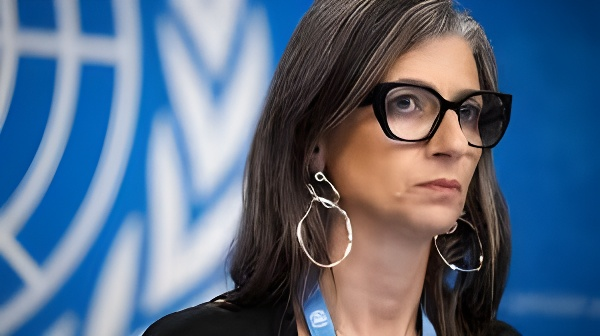

Juriste italienne née en 1977, Francesca Albanese est depuis mai 2022 la rapporteuse spéciale des Nations unies sur les territoires palestiniens occupés — première femme à occuper ce poste. Ses rapports documentant ce qu'elle qualifie de génocide à Gaza, ses prises de position frontales et les tentatives répétées de la faire révoquer en ont fait l'une des figures les plus controversées et les plus scrutées de la scène diplomatique internationale.
Francesca Albanese est née le 30 mars 1977 à Ariano Irpino, dans la région de Campanie, au sud de l'Italie. Titulaire d'une licence en droit avec mention de l'Université de Pise et d'un master en droits de l'homme de la SOAS (School of Oriental and African Studies) de Londres, elle complète sa formation par un doctorat en droit international des réfugiés à la faculté de droit de l'Université d'Amsterdam.
Elle travaille pendant près d'une décennie comme experte en droits de l'homme au sein de l'ONU, notamment pour le Haut-Commissariat aux droits de l'homme et pour l'UNRWA — l'agence onusienne dédiée aux réfugiés palestiniens. Durant cette période, elle conseille l'ONU, des gouvernements et la société civile sur les droits des groupes vulnérables au Moyen-Orient, en Afrique du Nord et dans la région Asie-Pacifique. Elle est par ailleurs chercheuse affiliée à l'Institut pour l'étude des migrations internationales de l'Université de Georgetown, et chercheuse à l'Institut international d'études sociales de l'Université Érasme de Rotterdam.
En mars 2022, le Conseil des droits de l'homme des Nations unies la nomme rapporteuse spéciale pour les territoires palestiniens occupés depuis 1967, pour un mandat initial de trois ans. Elle prend ses fonctions le 1er mai 2022. Sa nomination est d'emblée contestée : des déclarations passées dans lesquelles elle avait qualifié les États-Unis de « subjugués par le lobby juif » et évoqué un « sentiment de culpabilité à l'égard de l'Holocauste » en Europe lui valent des accusations d'antisémitisme. Elle reconnaît un « choix des mots inapproprié » et précise qu'elle visait les lobbys pro-israéliens aux États-Unis, non le peuple juif.
En réponse à ces attaques, soixante-cinq spécialistes de l'antisémitisme, de la Shoah et des études juives signent une déclaration affirmant que la campagne contre elle vise essentiellement à la réduire au silence et à saper son mandat, et non à combattre un antisémitisme réel. De son côté, Amnesty International Italie publie une lettre de soutien cosignée par des dizaines d'organisations de droits, de parlementaires, de juristes et d'universitaires italiens.
Prise de fonctions comme rapporteuse spéciale. Premier rapport en octobre 2022 : elle recommande aux États membres de l'ONU d'élaborer un plan pour « mettre fin à l'occupation coloniale israélienne et au régime d'apartheid ».
Attaque du Hamas sur Israël. L'offensive israélienne qui s'ensuit à Gaza propulse Albanese sous les feux des projecteurs mondiaux. Elle se consacre dès lors à plein temps à son mandat, délaissant l'enseignement.
Publication du rapport « Anatomie d'un génocide » : elle estime qu'Israël a violé trois des cinq actes constitutifs du génocide définis par la Convention des Nations unies. Le rapport déclenche une nouvelle vague de demandes de révocation.
Le Conseil des droits de l'homme la reconduit dans ses fonctions jusqu'en 2028, malgré l'opposition des États-Unis, de certains pays européens et d'Israël. Le comité de coordination des procédures spéciales rejette les plaintes déposées contre elle.
Publication du rapport « De l'économie de l'occupation à l'économie du génocide » : elle cite plus de 60 multinationales (Microsoft, Amazon, Blackrock, Glencore…) qu'elle accuse de tirer profit de la guerre. Washington gèle ses avoirs et lui interdit l'accès au territoire américain.
Lors d'un forum à Doha, elle évoque un « ennemi commun » ayant permis le génocide à Gaza. La France exige sa démission. Elle refuse, invoquant la confiance du Conseil des droits de l'homme.
Devant le Conseil à Genève, elle accuse la communauté internationale d'avoir accordé à Israël « un permis de torturer les Palestiniens ». Elle décrit la torture comme « une politique d'État de facto ».
Pour comprendre les prises de position de Francesca Albanese, il est essentiel de saisir la nature de son mandat. Un rapporteur spécial des Nations unies est un expert indépendant nommé par le Conseil des droits de l'homme. Il ne fait pas partie du personnel de l'ONU, ne perçoit aucun salaire et n'est pas habilité à s'exprimer au nom de l'organisation. Il agit à titre individuel, en totale indépendance des gouvernements comme du Haut-Commissariat aux droits de l'homme.
Son rôle consiste à enquêter sur la situation des droits de l'homme dans un territoire donné, à produire des rapports soumis au Conseil et à l'Assemblée générale, et à formuler des recommandations. Cette indépendance est sa raison d'être : elle garantit que ses conclusions ne sont pas filtrées par des considérations diplomatiques. C'est aussi ce qui rend ses rapports aussi directement contestés par les États visés.
Depuis son entrée en fonction, Francesca Albanese a produit plusieurs rapports qui ont alimenté le débat juridique international sur le conflit israélo-palestinien. Son premier rapport d'octobre 2022 qualifiait l'occupation israélienne de « régime intentionnellement acquisitif, ségrégationniste et répressif ». Après le 7 octobre 2023, ses travaux se sont concentrés sur la bande de Gaza.
Le rapport « Anatomie d'un génocide » de mars 2024 constitue sa contribution la plus retentissante à ce stade : il établit qu'Israël a commis trois des cinq actes prévus par la Convention pour la prévention et la répression du crime de génocide — notamment le fait de tuer des membres du groupe et de lui infliger des conditions d'existence devant entraîner sa destruction physique. Elle souligne que la Cour internationale de Justice a elle-même reconnu, dès janvier 2024, un « risque réel et imminent » de génocide et ordonné des mesures provisoires.
« Ce rapport montre pourquoi le génocide israélien se poursuit : car il est lucratif pour beaucoup. Des fabricants d'armes aux géants de la technologie, en passant par les banques et les plateformes en ligne, les entreprises ont fourni les outils, le financement et la légitimité de cette machine à effacer. »
— Francesca Albanese, rapport au Conseil des droits de l'homme, juillet 2025Les demandes de révocation se sont multipliées depuis 2022. Un groupe bipartisan de 18 membres du Congrès américain a réclamé son éviction, l'accusant de parti pris constant contre Israël. En février 2026, après ses déclarations à Doha sur un « ennemi commun », la France, l'Allemagne et la République tchèque ont appelé à sa démission. Jean-Noël Barrot, ministre français des Affaires étrangères, l'a qualifiée de « militante politique qui agite des discours de haine ».
Elle a systématiquement refusé de démissionner, se disant confortée par la confiance du Conseil des droits de l'homme. L'été 2025 a marqué un tournant : après la publication de son rapport sur l'économie du génocide, l'administration Trump lui a interdit l'accès au territoire américain et gelé ses avoirs — une mesure sans précédent dans l'histoire des Nations unies, dénoncée par le Haut-Commissaire aux droits de l'homme Volker Türk comme des « représailles » illégitimes.
| Acteur | Position | Argument principal |
|---|---|---|
| Israël | Demande de révocation | Parti pris, « programme haineux » |
| États-Unis | Sanctions individuelles | Accusations d'antisémitisme, entraves aux entreprises US |
| France, Allemagne | Démission réclamée (fév. 2026) | « Discours inacceptables » à Doha |
| CDH de l'ONU | Soutien et renouvellement | Indépendance du mandat, rejet des plaintes |
| Amnesty, ONG civiles | Défense active | Campagne de diffamation pour museler la critique |
Parallèlement à son mandat, Albanese a construit une œuvre académique de référence. Son ouvrage Palestinian Refugees in International Law (Oxford University Press, 2020), coécrit avec Lex Takkenberg, est considéré comme un texte fondateur sur la question des réfugiés palestiniens en droit international. En 2023, elle publie J'accuse, un essai engagé sur la responsabilité de la communauté internationale face à la situation à Gaza. En 2026, elle présente à la Foire internationale du livre de Tunis un nouveau recueil, Quand le monde dort : Récits, voix et blessures de la Palestine, écrit lors de ses séjours en Tunisie.
Elle enseigne le droit international et les déplacements forcés dans plusieurs universités européennes et arabes, et intervient régulièrement lors de conférences publiques sur le conflit israélo-palestinien. Sa candidature au prix Nobel de la paix a été évoquée par plusieurs organisations de défense des droits.
Francesca Albanese incarne une tension fondamentale au cœur du système onusien : celle d'un mandat d'expert indépendant dont la force tient précisément à son indépendance, mais dont cette même indépendance le rend vulnérable à toutes les pressions politiques. En refusant de démissionner face aux demandes des États-Unis, de la France, d'Israël et d'autres puissances, et en étant reconduite par le Conseil des droits de l'homme malgré tout, elle illustre à la fois les limites et la résilience des institutions multilatérales. Qu'on la juge partiale ou courageuse, ses rapports ont indéniablement contribué à faire entrer dans le débat public international des notions — génocide, apartheid, économie de l'occupation — qui restaient jusqu'alors confinées aux cercles académiques et militants. Aucun observateur sérieux des relations internationales ne peut aujourd'hui ignorer son œuvre.